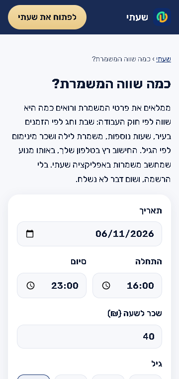

האתר: מחשבון המשמרת
לפני

אחרי

הכפתור בטלפון ברוחב 320
מה היה לא בסדרבטלפון צר (320 או 360 פיקסלים) הדף היה רחב מהמסך. הכפתור "לחשב כל משמרת אוטומטית באפליקציה" בתחתית הדף לא ירד שורה, ולכן הדף זז הצידה והפס הכחול למעלה נעצר לפני צד המסך, עם פס בהיר לידו.
מה השתנהבטלפון צר הכיתוב של הכפתור יורד לשורה שנייה (רק בין מילים), והדף ברוחב המסך בדיוק. מרוחב 412 הכפתור נראה כמו קודם. התיקון נמצא בכלל אחד שמשותף לכל דפי האתר.
איך זה לא יחזוראותה בדיקה, tests/e2e/edge-boxes.js, עוברת גם על כל 17 דפי האתר בחמישה רוחבי מסך, בבהיר ובכהה.